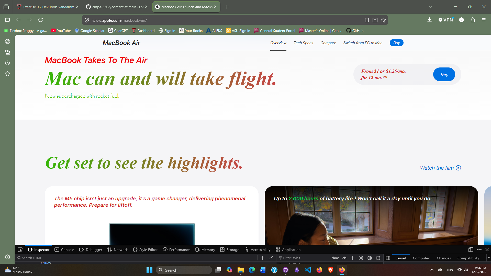

My Dev Tools Vandalism
I used browser developer tools to temporarily "vandalize" a website. Below is a screenshot showing my changes. These edits only appeared on my computer and did not affect the actual website.

What I "Vandalized"
Describe the changes you made to the website using the browser's developer tools. Some potential questions to consider:
- I changed text about the mcbook
- The CSS properties I changed where the font family and color
- What I changed made it seem as if the macbook will take flight
- I was able to see how changes were commited and some were not
- I found it humorus to imply that the macbook can fly
- I was able to understand how html and css work togehter because of the work we have been doing in class
- I understand how the dev tools work and how beneficial they can be when creating a website of your own